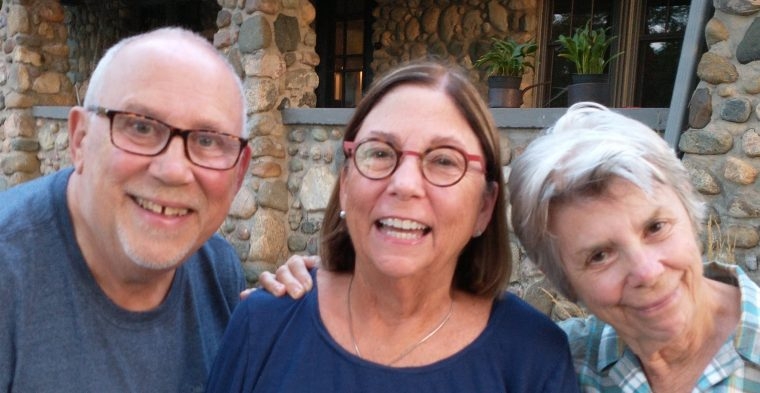
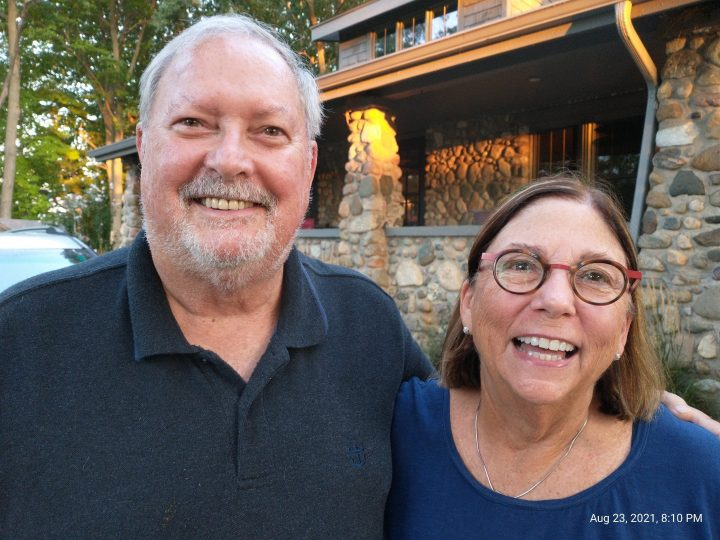
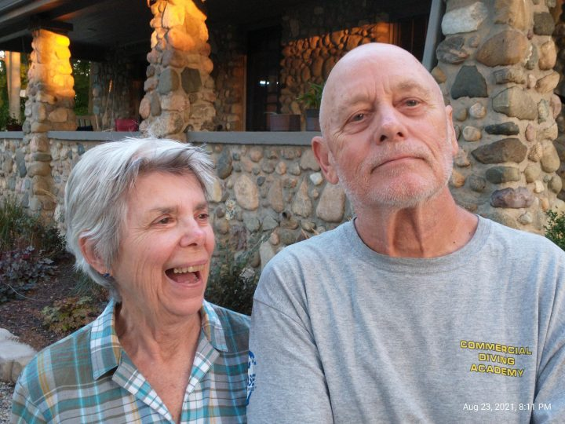
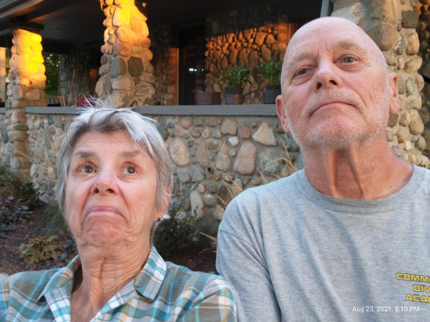

After spending two wonderful cool fall days and nights at Historic Fort Robinson State Park we made our way down U.S. 385 to our next stop at Sidney Nebraska.
Free RV & Truck Parking
This location is the World Headquarters for Cabela’s and has two very large multi-story office buildings behind the store, loads of customer parking out front and lots of free truck and RV parking along with free dump station and fresh water fill for the RV’ers. Thank you Cabela’s!
This Cabela’s also has a full hook-up campground (for a fee of course) but if you can get by with out needing hook-ups and you can sleep to the constant hum of diesel truck engines and their refrigerator trailers running all night … well then – free is good!
We arrived mid-afternoon, the four of us grocery shopped across the street at Walmart, ate dinner at a nice little Mexican joint just down the street, and then settled in for the night. We really were not bothered by the trucks and we have ample fresh water/waste water capacity along with plenty of solar and batteries to run the TV in the evening and the furnace in the morning to take off the chill.
We did just fine, but it is fall and the temp got down to 49 degrees last night so all our windows were closed and the hum of the motors was dampened somewhat. If it was summer, the noise might be too loud.
As always, you can click on any of the thumbnails below to see a larger image
My Burrito Platter
Chips & Avocado
The girls both had Shrimp Tacos
David’s Nacho Supreme
In the morning we went on into Cabela’s and did a little shopping (mostly looking). They have SO MUCH STUFF! It’s fun to look at all their offerings from knives, to tents, clothing, shoes/boots, camping supplies, guns, and more. It’s always great to look at their wild game displays too.
After Cabela’s we decided it was time for a late breakfast and Kathy found this great little place that serves breakfast until 10am, then closes until they open for dinner at 5pm. It’s family owned and operated by the same family since the beginning. We enjoyed great atmosphere, super service and outstandingly tasty food!
Fort Robinson State Park and it’s two main campgrounds Soldier Creek and Red Cloud are located just west of the small town of Crawford, Nebraska on U.S. 20 and west of U.S. 385 in the extreme northwest corner of Nebraska.
The interactive map below shows everywhere we’ve camped overnight since we’ve been on the road. See if you can zero in on Fort Robinson. You can zoom the map in and out and move it about. When you click your mouse (or finger on a tablet) on any red balloon, the name and location of the park will be highlighted. Let me know if you find Fort Robinson! (you can click on “Accept All Cookies” to get rid of that annoying text box that covers part of the map.)
When we stayed (early October) the full hook-up campground (31 sites) at Red Cloud was closed for the season but the Soldier Creek campground has 80 electric only sites, clean pit toilets, and a shower house. Water hydrants and dumpsters are located on the main loop and there’s a dump station at the entrance/exit to the campground.
It’s about a 50/50 split of those sites that are reservable on ReserveAmerica and those that are held for walk-up only. I thought we were lucky to get a reservation a few days earlier given that we needed to stay on Friday and Saturday night. When we arrived about 3p.m. the campground was pretty empty, but they were still rolling in well after dark. By Sunday morning, about 80% of the campground was once again empty. The crowds there on Friday night and Saturday were local folks just trying to enjoy an end of season campout with family and friends. It was entertaining to see all the little kids playing soccer, football, or riding their bikes all around the campground — Kids just being kids .. it was great.
Our site at Fort Robinson Soldier Creek Campground
Relaxing in the afternoon
David and Susan
Cha Cha enjoying the scent of the squirrels
Mid-afternoon Friday
Sunset in the distance
Wild turkeys strolling through the campground
Here are pictures of some of the landscape surrounding the fort. The road (U.S. Route 20) is called the “Bridges to Buttes Highway” and the tall buttes adjacent to the park are impressive.
We took a short drive north of the parade ground up toward the Wilderness Camp area and found a small fishing lake. This is on the park grounds, so access is included in your daily entrance fee.
These guys are awfully curious
Many buildings still stand today and are used by the park as guest quarters. These include the main multi-story brick barracks that serves as the main guest reception and registration building and also has guest rooms and a full service restaurant.
Other buildings on the grounds include officers quarters, horse stables, commanders quarters, the post headquarters building, the veterinary hospital, and more. Unfortunately most of the buildings and tours were not open to visitors since we were there after the summer season.
Barracks
Officers Housing
Housing
Post Headquarters
Walking around the perimeter of the parade ground and seeing all the buildings … one can almost see the men walking to their assigned duties of the day or in drill on the parade ground.
The following text is taken from the back of the campground site map that they gave us when we checked in at the office.
“Fort Robinson was built in 1874 as a temporary encampment during the Indian Wars and used by the U.S. Army to beyond World War II.
One of the most tragic events in the life of Fort Robinson .. the Cheyenne Outbreak, occurred where the Soldier Creek Campground now sits.
Indians were being rounded up by the U.S. Army and forcibly sent to Indian Territory in Oklahoma. A band of Northern Cheyenne escaped and fled across the plains of Kansas and Nebraska, pursued by thousands of soldiers.
Captured by troops from Fort Robinson, the 149 men, women, and children, wo had survived the ordeal, were imprisoned in a log barracks.
The barracks the Indians were imprisoned in (before the breakout)
Told they would have to return to Indian Territory in Oklahoma, their Chief Dull Knife said they would rather die here in their old hunting grounds.
The army attempted to starve them into submission, and on the bitter cold night of January 9, 1879, they tried to escape. With the few guns they had managed to hide, the braves opened fire on the guards.
As the women and children ran toward the White River, the men fought a running battle with the hastily awakened garrison. Many Cheyenne fell between the parade ground and the river, where the campground is located today. It was one of the last battles of the Indian War.”
You can learn more about the history of Fort Robinson by following this link.
All in all, it was a great place to camp. We couldn’t have asked for better weather … warm sunny dry days and cool evenings allowed us to leave the windows open and listen to the breeze rustle the leaves on the trees.
Everybody in the campground behaved themselves and the ability to walk the grounds was an added benefit. We only wish we were here before Labor Day so that we could take advantage of the open buildings and the tours.
Once again, thanks for riding along. We hope you’ll consider scrolling down the page here and leaving a comment.
We knew that after Spearfish SD, we wanted to work our way down by Custer State Park. This was so we could meet up with our friends David and Sue once they finished their volunteer gig there on October 1st.
Our plan was to hook up with them and we’d mini-caravan together on our trip back to Rover’s Roost by November 1st. David and Sue are leaseholders there as well.
We had considered staying in Custer State Park, but we were reminded that during the time we would be there, the annual Buffalo Roundup would be taking place and the park would be mobbed with about 25,000 EXTRA visitors, all coming to see the excitement of the roundup.
If you’d like to see and learn more about the Buffalo Roundup, follow this link.
We really wanted to avoid the crowds and the noise of a busy state park, so we looked for another opportunity south of there since that’s the direction we’d all ultimately be heading.
I use a number of apps and web sites when looking for a place to camp. We have found that there are some nice city or county parks in little towns off the main interstates. We also like state parks and Army Corp of Engineers campgrounds as they are less “commercial” like RV parks and more like campgrounds were meant to be.
We’re now completing 2 weeks here at the park and we’ll be here a couple more days, leaving for Nebraska on Friday.
The park has four campgrounds within it’s boundaries and we just lucked out that we were able to get one of the Camp Host sites with full hookups because it’s the end of the busy season and the hosts have left for the year. All of the other sites have electric only so you have to go to the dump station to empty your waste tanks and take on fresh water.
We’re in the Cheyenne Campground at the top of the hill overlooking the lake. I guess if it was mid-summer we might have preferred one of the other campgrounds down by the lake but then we’d be putting up with more crowded conditions too.
The fact that it’s fall and we are up and away from the lake has afforded us the luxury of having an otherwise vacant campground around us most days.
If we’re sitting outside and see someone walking by we’ll always wave and say hello and sometimes they’ll come on over for a short chat. Sometimes we’ll meet other campers as we take our daily walks and we’ll strike up a conversation. Sometimes the folks we meet and talk with are full-timers like us and often-times they are Weekend Warriors or on an extended vacation from their Sticks-N-Bricks home.
New friends Clark and Anita that camped next to us at Angostura for a few days (their great Oliver trailer in the background)
Today, we had something unusual and unexpected happen. It was about 8:30 am or so and Kathy and I were sitting here having our morning coffee and watching the news on TV. A knock on the door. Who would be knocking on our door?
As Kathy went to the door to open it she looked out the window and remarked “I know this lady”.
Kathy opened the door and the lady apologized for knocking so early, but explained that they were leaving the campground and heading to Cody Wyoming but she just HAD to come over and say hello before they left.
Turns out that the folks that pulled in to the site next to us last night were actually from Ohio. Not just Ohio, but the same county where we used to live. Further, she (Janet) used to do Kathy’s mother’s hair when Lois lived in the local nursing home!
Not only that, but Janet and Homer’s daughter (Staci) and her son (Sammy) were traveling with them and I had sold Staci her home in Cardington back when I was a Realtor in Morrow County. What a hoot!
Janet, grandson Sammy, daughter Staci, and Homer all from Cardington Ohio
We had a nice conversation (although short because they were anxious to get on the road) with them and wished them well on their trip over to Yellowstone and eventually down to the Albuquerque Balloon Fiesta.
As we’ve said before … this mobile lifestyle has afforded us the opportunity to see so many places and things that we would never see if we still had our Sticks-N-Bricks home. But far more meaningful to us has been all the people we’ve had the opportunity to meet along the way. Some of these folks are “passing through” like Janet and her family so our visits are short. But there are others who we get to spend more time with through our Workamping and volunteering gigs, so more meaningful relationships develop in those situations. We are so thankful to be able to be exposed to these situations and to meet so many wonderful people. Who knows how long this lifestyle will continue for us? But in the meantime, we’ll make the most of it.
Thanks again for riding along – we look forward to connecting with you again in our next post when I’ll share with you a little about the City of Hot Springs South Dakota.
After Spearfish South Dakota and then our trip up to Fort Peck Montana to visit Ranger Scott and Ranger Sue, we came back down U.S. 85 into Medora North Dakota for a night. We had been to Teddy Roosevelt National Park a couple years ago, so we didn’t take the time to drive through the park and all we did was walk to dinner from the campground and then did a little sightseeing as we walked through town on our way back to the campground.
Kathy’s Strawberry Jalepino MargaritaFood prices seem high out here ($14 for a burger?)Our after dinner walk in downtown Medora NDMore downtown Medora
The next day we continued on down 85 for another nights stay in Spearfish on our way to Hot Springs. Besides, we needed to check in at the Spearfish post office to see if our General Delivery package had arrived yet.
This time instead of staying at a campground, we decided to take advantage of our Harvest Hosts membership once again. We reached out to McGuigan Farm Experience on the HH web site and they accepted our request to stay within just a couple hours.
Our host Nancy greeted us at the drive and welcomed us with a big smile and a little conversation. She showed us where we could park. It was a nice big hard packed grassy field that allowed us to pull straight in with our toad attached and was large enough we could just circle around in the morning to leave without ever having to unhook the toad.
We had the place to ourselves
After we got settled in, Nancy took us on a tour of the farm. Although it’s been in Mike’s family for generations and had been a working dairy farm for the vast majority of that time, they now rely on income from grain production and leasing out some of the land. They have recently started the McGuigan Farm Experience project to offer both school groups and the general public alike the opportunity to visit a real farm with real animals so that folks might learn about what a farmer really does and where that food on the table comes from.
Nancy excused herself and left us to relax the rest of the evening and relaxing it was! It was SO dark and SO quiet! We had a wonderful nights sleep with the windows wide open and enjoyed a gentle breeze rolling over the hayfields that lulled us to sleep.
As we prepared to depart in the morning, I noticed some water on the hardpack under the fresh water tank compartment. Further inspection revealed that now the FRESH water tank fill hose had a small leak. I figured it wasn’t hard to fix, (tighten a hose clamp), but this old body just doesn’t want to twist, turn, and stretch like this project would require.
Thankfully, we were at Spearfish which is just down the road from Belle Fourche which is the home of my new best (RV repairman) friend Jim and Progress RV.
We didn’t even call ahead. We left the farm and drove on up the ten minutes to see Jim in hopes he would drop whatever he was doing and come on over and take care of us. And he did just that!
My new Best Friend Jim @ Progress RV
Next stop … Hot Springs South Dakota. But first – the car goes in the shop for some unexpected repairs. More on that in my next post.
Thanks for riding along. You can leave any comments below.
It was about 8:30 at night, we were watching one of our favorite Netflix pix on TV and “poof” out went the 110v to the coach. All the 12 volt circuits were still working. I looked out the window, didn’t see any lights on at the neighboring camp site – guess the whole campground must be out.
What to do? Go to bed – what else? Since we’ve got a couple hundred amp hours worth of battery I could’ve turned on the inverter and finished the show, but what the heck.
In the morning I saw that the gentleman cleaning the bath house had arrived and took a walk down to see if he knew anything about the power outage. He knew nothing about it and further … the lights in the bath house were lit!
OK now it’s time for me to get to work and investigate the problem. Always start with the easiest (or most obvious likely) suspect component first.
Check the park power pedestal. Turn the 50 amp circuit breaker on and off to reset it if needed.
Follow the power cord to the EMS (electrical management system) and check to see that the digital display (or LED’s) are reading correctly with no errors.
Check the 110v circuit breakers inside the coach (my Square D panel is at the foot of the bed). Turn off and back on each breaker to assure it is reset.
Locate the converter/inverter/charger and check to make sure the circuit breakers have not tripped here.
So at this point we’ve checked all the easy suspected problem areas without having to remove any panels or take out our voltmeter to do any further checking. Now it’s time to get into the nitty-gritty.
Progressive Industries EMS
EMS display shows adequate power with no errors
110v breaker panel at foot of bed
Inverter shows no tripped breakers
So at this point we know the pedestal power is good because the Progressive Industries EMS is showing adequate voltage on each of the two legs with no error codes.
We know that the 110v circuit breakers at the foot of the bed are all switched ON and we know that the GFCI circuit breaker (in our case in our bathroom at the wash basin) has not tripped.
Our next step is to remove the cover on the inverter that will allow us to gain access to the terminal strip where I can take a couple quick voltage checks. The terminal strip has (6) screw terminals. Three are for the input Line 1, Line 2 and neutral and the other three are for the output Line 1, Line 2 and neutral. A quick check with the AC voltmeter (that every RV’er should have in their tool bag) shows no input to the inverter.
So what is between the EMS and the inverter?
On our coach (and most others) we find an automatic power transfer switch. The purpose of the Transfer Switch is to feed 110v power to the coach from EITHER the shore power pedestal OR the onboard diesel generator. There is a circuit board inside the enclosure that has three terminal strips, two large relays, along with time delay circuitry to make sure that the incoming power from either the shore power or the generator is up to adequate voltage before energizing the appropriate relay. Only one source is allowed to feed the coach at a time.
Once I took the cover off the Transfer Switch, the answer to my problem was obvious. One of the relays had a burnt wire coming off it and connecting to the circuit board. Evidently the screw attaching the wire had worked loose (It’s a 20 year old rig after all) which caused an increase in current draw and subsequent heat that ultimately burned the insulation off the wire and also burned through the circuit board.
Trransfer Switch Cover
Inside the Transfer Switch
Burned wire connector on relay
Unfortunately, we are camping over an hour south of Rapid City SD where there is MAYBE an RV shop that might have a transfer switch in stock but it’s very likely a different brand or newer model that may not have the same physical characteristics as the Intellitec model that we have. I decided I’d look online to see if I could even FIND the Intellitec and lo and behold, they still do make it! This would make replacement a LOT easier, same wire lengths, same screw holes, etc.
Challenge is, by the time I get it ordered (today is Sunday of course) and the supplier ships it to us here in Hot Springs, we will be gone as we are leaving on Friday.
I decided my best course of action is to manually re-wire the connections (removing the generator from the circuit) and then order the new transfer switch to arrive at our park in Arizona sometime after we get there November 1st.
I removed the four wires from each of the terminals for the SHORE POWER and COACH and connected (using split bolts) the red to red, white to white, black to black, and ground to ground.
I then carefully taped all exposed metal connections with electrical tape to make sure there were no accidental shorts.
Wires removed from switch
Split bolt pkg
This is the split bolt
The completed diagnosis and temporary repair awaiting the new transfer switch
This didn’t happen all of a sudden. I blame myself for not catching it earlier. Kathy and I have both noticed over the last month or so that occasionally while watching TV, the screen flickers for an instant. The screen actually goes black momentarily. It’s not enough to reset the clock on the microwave, but it does flicker.
Also, about a month ago when I was in the basement compartment where the power comes in to the coach, I noticed a slight hum from the transfer switch box. I figured it was one of the relays humming and I know that relays will do that from time to time. I should have taken the cover off to investigate further at that time.
About a year ago I DID have the cover off and I checked all the screws on the circuit board terminal strip(s) where the wires come in to the board. I tightened them as needed. What I did NOT check however were the screws on the relays. Perhaps if I had checked and tightened them back then, this problem would not have occured.
Oh well …. live and learn, eh? Just thought I’d share with you one of the recent problems we’ve had and my troubleshooting approach to get to the answer.
After Kansas City, we worked our way north and spent our first night’s stopover at a great little city park in Elk Point, South Dakota. $15/nite for 50 amp electric and water. There’s a dump station, but we didn’t need it.
The park has multiple ball diamonds, multiple picnic shelters, plenty of scattered picnic tables, and loads of playground equipment.
Read the plaque below and you’ll learn about how this site was actually a stopover for Lewis & Clark.
Historical Marker at Elk Point City Park
Kathy enjoying the playground at Elk Point
After Elk Point, we moved on and arrived at Spearfish South Dakota where we enjoyed meeting up with friends Matt and Sherry, Jim and Brenda, and Paul and Chris (who we spent a couple days with in Mason City Iowa) and they stopped by on their way to Rapid City. The next day David and Susan came on up from Custer State Park where they were volunteering to join us all for the day.
Spearfish, as you might recall is the town where some of us volunteered at DC Booth Historic National Fish Hatchery a couple years ago. It was good to see the recently re-painted fish car!
It was great to spend the evening around the campfire at Volunteer Village again
Enjoying dinner at the Farmhouse
Jim & Brenda’s rig
The DC Booth Fish Car
Campers having a birthday party
These types of campers are becoming more popular
An early RV
While at Spearfish, I noticed a small leak under the coach. It was coming from the “wet bay”, where the waste tanks (and the drain pipe) are located. Further inspection showed that the 3″ pipe coming out of the black tank had a very small leak at one of the fittings. I could see (once I got down on my hands and knees) that this joint had been repaired before by the previous owner.
We were fortunate in that a RV repair shop was just up the road in Belle Fourche (pronounced “Bell Foosh”). I called them, explained our plight that we were full-time RV’ers and were planning to head out tomorrow to Fort Peck Montana for a few days. They had us bring it right on in.
Jim the owner came on out and looked over the situation, assured us he had the necessary fittings and could get us back on the road in a couple hours. He did a great job, I was right by his side and we had some great conversation while he was doing the repair. It ended up he took out all the old, and provided new fittings and a new elbow and we were out of there and back to Spearfish before noon that day.
Bottom of the black tank with the leaking fitting (caulked previously)
Outside the shop
The drain elbow with the black tank fitting removed
Smiling customer Herb with Progress RV owner Jim
After about a week, we traveled north back up to Fort Peck Montana and the U.S. Army Corp of Engineers campground we had volunteered at in 2019. We wanted to check in on the two rangers we had worked for while we were there.
On the way, we stopped for an overnight stay at Miles City Montana. We were going to stay at the local Elks Lodge, but it was in a noisy downtown district right along a truck route and we were fortunate to stumble across the local county fairgrounds. We had a very quiet and restful evening parked alongside the ag building.
The next morning we found a great little coffee shop downtown where we got our morning boost (and a little something sweet too!)
Our spot in the fairgrounds
The old train station Miles City MT
The Ugly Mug Coffee Shop
Apple Crunch Danish (we shared this one)
Inside the shop
After our morning boost we visited the Range Riders Museum right across the street from the fairgrounds. I have never been in a museum with such a wide range of collections. It was great to talk to the ladies up front and find out a little about the “Range Riders”. These were ranchers and cowboys who worked their livestock on the open range (no fences).
The museum was founded in the 1930’s and still operates with mostly volunteers. Although I took tons of pictures while visiting, I now find they have a great web site with a lot of great information about the museum. I invite you to take a few minutes and explore the Range Riders Museum to learn about a lost way of life in western America.
If you’d like to see my photos, you can follow this link to my Google Photos album of the museum.
From Miles City we made it the rest of the way up to Fort Peck for a couple days. Check out the picture below that shows the final result of one of the volunteers who made the little camper lending library.
It was good to visit with both Ranger Scott and Ranger Sue again. Since the Interpretive Center is a federal building, masks are required. Scott is in charge of the campground and Sue is responsible for the Interpretive Center. To see more of our time at Fort Peck back in 2019 you can follow this link.
Our site at Fort Peck Dam Campground
Kathy at the free library
Close up of the library
Ranger Scott
Ranger Sue @ the Interpretive Center
There’s more … but I’ll save that for another time. Thanks for riding along, hope I didn’t bore you too much. I know I can get a little wordy and I’ll work on the next post to cut out some of the details.
It was a long drive (335 miles) down US-35 from Miles City Iowa to Kansas City Missouri. Normally we don’t push it this hard (we are retired after all) so we usually take our time.
We were on a schedule to get to Spearfish (South Dakota) before the Labor Day holiday weekend to make sure we could get a spot in the city campground and spend a few days with our friends Matt and Sherry before they were to leave Spearfish for points south.
But we wanted to stop and visit our friends Ron and Judy who live at Lee’s Summit (a Kansas City suburb) They had put us on to a great little city park just a few miles from their home. Once we were in the park and settled, Ron came and picked us up at the campground and took us back to their home where Judy had prepared a wonderful dinner for us.
Our nice shaded site at the Lee’s Summit City Campground
We had first met Ron and Judy when we all worked as volunteers at the Albuquerque Balloon Fiesta in fall of 2019. We met up with them again when we were all at “The Big Tent” RV Show in Quartzsite Arizona in January of 2020. It was great to hook up with them again.
Our friends Ron and Judy
Kathy and I had also planned to meet up and visit with Carl who we had met in February of 2020 when we traveled with about 50 other members of our Escapees RV Club down into Mexico. While in Mexico, Carl had told us about his family’s mausoleum in Holden Missouri (near Kansas City). I was intrigued and wanted to see it if we were ever in that part of the country. Now was my chance!
We had told Ron and Judy about this over dinner and invited them to come with us the next day. They jumped at the chance as well. After all, how often do you get an invite to tour a mausoleum?
The next day the four of us jumped in their car and headed to Holden Missouri, about 30 minutes from the campground.
Carl was expecting us and gave us the “Grand Tour”. His Great-Grandfather built the mauseleum in the early 1800’s for his family, both those who had pre-deceased the construction and those that were to come in the future.
Carl aquuired the mauseleum from the family trust. He didn’t set out to own it, he was doing some family genealogy work and as a result of his research, he came across the mauseleum as part of the family history.
The more he looked at it and saw what a state of disrepair it was in, the more he was drawn to do something about it.
The roof has been replaced to stop any further water damage. Electric has been installed as well as a security system. Carl has opened the building and the surrounding grounds to the community for public events like craft fairs, scout campouts, church picnics and such.
There were 23 occupied crypts when Carl took possession and he has taken all the legal and ethical steps necessary to move the occupants to other locations. All the remaining caskets are now empty.
In looking at the pictures below (click on any thumbnail to open a larger view) you’ll notice that the entire structure is made of concrete. The walls, floors, stairways, and ceilings are all concrete. The crypts are also concrete with ornamental marble fronts that have the deceased name and dates engraved.
Carl is restoring the mauseleum
Front View
Side View
Note the concrete ceiling
Now it was time to continue our trek west. We said our goodbyes to Carl and Ron and Judy and headed back to the campground for the night before starting our travels to Spearfish South Dakota the next day.
More to come in Installment #4 in the next few days.
Tuesday morning we left the Shiawassee County Fairgrounds and heading to the Ludington Michigan area. We pulled in to our Harvest Hosts location just north of U.S. 10 and about 15 miles east of the Lake Michigan shore at Ludington. We’d been in this area of Michigan many times over the past 50 years or so … starting with trips with the family as we were kids growing up, then spending our honeymoon in northern Michigan and most recently volunteering at Pere Marquette Oaks RV Park during the summers of 2017 and 2018. So this in some ways is “Old Home Week”.
As a member of Harvest Hosts, we are able to stay in driveways and parking areas of wineries, distilleries, museums, galleries, and other small businesses who invite RV’ers to park on their property overnight. It is suggested (although not mandatory) that the traveler returns the favor by purchasing something from the host.
We pulled in to Craig’s place, tucked into the tall pines of northern Michigan. His gallery, just across the driveway from the house, is filled with all sorts of hand made woodcraft. Loads of small handcrafted smoking pipes, kitchen spoons and spatulas, and cutting boards along with much larger artwork. We bought a really nice mitten-shaped (Michigan) maple cutting board. We admired other pieces but living in a motorhome, we just don’t have the luxury of square footage for larger items.
Once we parked the rig at Craig’s place, we unhooked and drove the car about 15 miles south to PM Oaks at Baldwin. There we were to meet Kathy’s cousin and her husband who we hadn’t seen in about twenty years or so. They used to live in southeast Michigan (where we were from) but have lived in Traverse City for nearly a quarter century now.
We met at PMO as they have a nice shelter/pavilion along with an air conditioned clubhouse we could sit and visit at without feeling as though we were being rushed to leave like might happen if we met somewhere in a restaurant.
By now it was getting to be late afternoon, so we decided we would leave PMO and meet down the road for an early dinner. After that they would move on home to Traverse City and we would head on back to Craig’s place for the night Well ……..
That all SEEMED like a good plan but, … as I turned the key on the car … crank crank crank … but no start. We sent Sue and Loren on home as we had friends there at PMO who could lend us jumper cables, a ride back to our rig, and more.
We had the car towed to a shop down the street for repair, had dinner at Chuck & JoAnne’s (our friends at PMO) and then finally settled in for the night. The shop said they’d get the car in about 11a.m. on Wednesday and I reminded them that I needed to know ASAP on Wednesday if we’d get it back that day because we had an already paid reservation on the SS Badger to cross Lake Michigan on Thursday. If it was not to be that we’d be fixed in time for the trip, I needed to cancel in hopes that we’d get at least some of our money back.
Wednesday morning I connected with a fellow high school graduate of ours (Class of ’72) who, as it turned out had in the past couple of years purchased a former lakeside resort (3 cabins) on Lake Cecilia just down the road from PMO. We had connected on Facebook months earlier and made plans to get reacquainted (we hadn’t seen each other or even talked since 1972) on this trip. Because our car was in the shop, Rich drove on over to PMO and picked us up. We spent all morning and into the afternoon having a wonderful visit with Rich and his wife Diane at their beautiful cabin(s) by the lake. They’ve done a wonderful job remodeling/restoring while keeping the 1940’s vintage lakeside cabin theme. We envy their drive and their creativity – they’ve got a charming place.
I’m just angry with myself that I didn’t get any pictures of Rich and Diane or their lakeside getaway.
Afternoon found us back at PMO enjoying an early dinner with our friends Chuck and Joanne along with Mike and Deb. It was great to have the opportunity to reconnect with all four of them again. During our meal the shop called to say the car was fixed and we could pick it up anytime.
Turned out that the A/C compressor had seized up and trying to crank the starter over and over to get the car started then burned out the starter. So a new starter and a/c compressor was needed.
We also found out that an RV site right behind Chuck and JoAnne’s would be available for us tonight so Chuck chauffeured me up to get the coach and bring it back down to PMO where we could plug in for the night. Then Chuck drove me up to the shop to get the car. After supper Kathy and I took advantage of the opportunity to get in the pool and just unwind and relax for a couple hours. All the stress of the last day or two just melted away knowing the car was fixed, we were parked in a spot where we could have a/c and we would easily make it to the ferry the next morning.
Again, I’m so sorry I never took any pictures of our friends at PMO or our time together.
The story of the Badger
At the loading bay door
Walking along the deck
At the bow of the boat
Looking down from the deck as we back into the ramp to unload at Manitowoc
Once unloaded at Manitowoc, we moved up just a few miles, parked our rig at the Elks Lodge for the night, and drove the car up to Green Bay where we met our good friends Forrest and Mary for lunch at Mackinaws Grill.
My Wet Burrito
Kathy’s Strawberry Spinach (w/ Shrimp) Salad
We had a nice, although brief visit. We caught each other up on where our travels had taken us over the last few months. Forrest and Mary have an RV lot just 4 spaces away from us at Rover’s Roost in Casa Grande AZ and they had come to visit us this past June while we were camp hosting at Dale Hollow Lake State Park in Kentucky. It was great to reconnect with them. Once again, I neglected to get a picture of Forrest and Mary too!
We went back to the Elks Lodge late afternoon, ran down the street to pick up some necessities at the local Walmart and then came back and enjoyed making new friends in the lodge. They welcomed us with open arms. We had a nice visit along with a couple drinks but it had been a busy day so we excused ourselves early, said our goodbyes and thank you’s and retired early to our home on wheels.
The next day found us driving 350 miles from Manitowoc Wisconsin to Mason City Iowa where we met up with Paul and Chris who we had first met when we were Workamping at Rainbow’s End RV Park in Livingston Texas. They had just (last week) finished up the sale of the family farm in Maynard Iowa, then they visited the Winnebago factory in Forest City Iowa to get a few small things taken care of on their (new to them) 2012 Winnebago Meridian 40′ motorhome.
Paul promised us that we would enjoy the best steam of our lives that night and they were right! My filet was “Melt In Your Mouth” good
Herb, Kathy, Chris & Paul
Parked next to Paul & Chris
The Northwestern Steak House
Take look at the menu
90 minutes max in the booth
My 9 oz medium rare filet
Our stay in Mason City Iowa
Since Paul grew up in Mason City, he knew what to see and do for the short time we had available to us. We visited the Surf Ballroom in Clear Lake where Buddy Holly, Ritchie Valens and others had performed at on February 2, 1959 before taking a flight to their tragic deaths in a nearby cornfield.
Click on any of the thumbnails above to see full-size pictures
Here are some pix of the walls (and ceiling) of the “green room” where the performers prepared to go on stage. See how many signatures of the hundreds that are on these walls that you might recognize!
Click on any thumbnail above to see larger images
That’s all for this installment. The next leg of our trip will find us driving 335 miles from Mason City Iowa to Lee’s Summit Missouri. We meet up with friends Ron and Judy for time together along with the four of us visiting our friend Carl and touring his mausoleum.
I’ll fill you all in on that in the next few days.
In the meantime, take care of each other and stay healthy … we wish you well.
We left Ohio on August 20th after finishing up my hip replacement rehab. Our first stop was about 5 hours north to Romeo, Michigan to attend Kathy’s niece Lindsey’s wedding reception. The wedding was last year, but it was a small event with no reception because of Covid. The reception was a bright (and humid) Saturday late afternoon gathering under one of those huge white tents in the large back yard of her new husband’s parent’s home. There were about 100 people attending and we had the wonderful opportunity to visit with some of Kathy’s family that we hadn’t seen in years and meet some new folks as well.
We stayed 2 nights at Addison Oaks Campground, part of the Oakland County Michigan Parks and Rec.
Our camp site at Addison Oaks, about 10 miles from Lindsey’s wedding reception
When we arrived at Addison Oaks the first night we went on into Romeo for a walk up and down the main drag. This was the first night of the big annual “Dream Cruise” up and down Woodward Avenue and we got to see some of those cool classic cars from years gone by that were traveling to or from the cruise. While in Romeo we had a great meal out on the front patio at “Thee Office Pub”.
Beer Battered Cod, Mac N Cheese, and creamy Cole Slaw at “Thee Office Pub” Romeo Michigan
Sunday morning after the reception, we continued our trip west and moved on to the Shiawassee County Fairgrounds. We were able to spend a couple super quiet nights (we were one of two campers) while visiting my sisters and their husbands at Owosso, Michigan.
Betsy and Bob live on the north side of Owosso. They moved there last year after living on St. John U.S. Virgin Islands for about 10 years. Their son and only granddaughter live within about an hour and B&B are able to see her often. Sometimes she spends the night and she (Kaia) was there when we visited. Marilynn and Rick drove up from Jacksonville Florida for our time together. We had a great time sharing stories from years past and getting updates on everybody’s health and welfare.

Herb, Marilynn, & Betsy

Rick & Marilynn

Betsy & Bob

Just had to add this – yes, Bob IS smiling!
On Monday night we said our goodbyes, went back to the fairgrounds and pulled out Tuesday morning heading for Baldwin Michigan where we would spend a couple days/nights visiting our friends at Pere Marquette Oaks RV Resort where we worked as Park Supervisors the summers of 2017 and 2018.
And that’s where the problems started … more on that in my next post.
It’s been just 3 weeks since my total hip replacement surgery and the rehab is coming along great! I was able to set the walker aside after about 3 or 4 days and every day is better than the day before. If you’re really interested (maybe you’re considering having the surgery) you can read more about my recovery here.
So now we are set to head out from our daughter’s driveway here in Mt. Gilead, OH next Friday August 20th.
We’ve replaced the recliner in the coach with a new one. It takes less floor space, swivels, rocks, and reclines fully and is so much more comfortable than the leather one that came with the coach originally.
We also just had the entire coach washed and waxed. Normally this is a job that I do. I wash it about 5 or 6 times a year and wax it at least yearly. But this time since I am still recovering from my hip surgery, we were fortunate to find a mobile RV detailing service that came to the house and took care of the whole job in about 5 or 6 hours.
Cleaning the roof
Roof before and after
Ready to hit the road again
We had originally planned on leaving Ohio in early August and taking our time heading to Oregon visiting friends and family along the way and eventually ending up in Garibaldi Oregon to meet up with others from our Escapees RV Club at the Oregon Coast Hangout.
But a few things have changed. We are now going to our niece’s wedding in Michigan and that will not be until August 21st. This means that the rest of our trip will be delayed and if we were to still plan on getting to Oregon by Sept 6th we’d have to skip some of our other planned stops along the way.
Although we were looking forward to meeting up with about 30 other rigs at the Oregon Coast Hangout and seeing a part of the country we’ve never been to before and making new friends, we feel it’s more important to take the trip easy and instead stop along the way to renew old friendships.
Our planned route west as of this date (Aug 12th)
We will start out on Friday August 20th and head up to Addison Oaks Campground in Michigan where we’ll stay for 2 nights while we attend our niece’s wedding and visit with family a bit.
We’ll next head a little west to spend a couple days with my sister and her husband. They live in Owosso, Michigan and while there we’ll be staying at the Shiawassee County Fairgrounds. Betsy and Bob have a beautiful home with plenty of room for us but if you’re a full-time RV’er you can appreciate how we might be more comfortable staying in our own “home on wheels” and then we can just take the car over to their place for the day.
Our third stop for the next two days will be in the Ludington Michigan area. We will be staying at another Harvest Hosts location. We will be in the driveway of a local woodworking artist shop nestled deep in the woods. During the day we will be visiting our friends at Pere Marquette Oaks RV Park near Baldwin Michigan. We worked at PMO during the summers of 2017 and 2018. While there we’ll also hook up with a fellow high school graduate from 1972. I found out recently (on Facebook) that he and his wife just purchased a cottage on a lake just down the street from PMO. We’re also planning on spending some time with Kathy’s cousin Sue and husband Loren who live in the Traverse City are and who we haven’t seen in probably 20 years or more.
The next day will find us boarding the S.S. Badger car ferry and taking the 4 hour ride across Lake Michigan to Manitowoc Wisconsin where we’ll then meet up with our good friends Forrest and Mary who we know as our neighbors when we stay in Arizona at Rovers Roost. They are currently in Wisconsin visiting friends and family as well. We will spend the night at the Elks Lodge in Manitowoc.
Our next stop will be Forest City, Iowa. Forest City is the home of Winnebago Industries. Winnebago is one of the oldest camping trailer and motorhome manufacturers in the U.S. Paul and Chris, who we met while workamping in Livingston Texas in 2016 and have met up elsewhere in the country several times since then. Paul and Chris are in the process of selling the family farm and transitioning to full-time RV living and they’ll be at Winnebago Customer Service getting a few things done to their 40′ motorhome, so what better time for us to stop for a visit. Maybe we’ll get a factory tour while we’re there!
Ron, Kathy, and me posing for the camera
After spending a couple nights at Forest City, we’ll take a little detour off our “head west” trip and move on down to Holden Missouri, just southeast of Kansas City. Holden is the home of our friend Carl who is also a full-time RV’er and who we met on our Mexico caravan trip last winter. The three of us spent a lot of time together during that trip and really enjoyed each other’s company. Carl told us about the Miller Mausoleum that his grandfather had built and he had now inherited. An interesting story so we’re going to visit Carl, tour the historic mausoleum, and while we’re in the area we will also drive to Kansas City and spend a little time with friends Ron and Judy who we worked with at the Albuquerque Balloon Fiesta in 2018.
After our time at Holden and KC, we’ll start heading back up through Omaha and Sioux Falls to get to Spearfish SD by about Sept 5th or so. Our good friends Matt and Sherry are working once again at DC Booth National Historic Fish Hatchery (where we worked with them in 2019) and we want to spend a couple days with them before they have to leave and head out to Louisiana and Florida for the winter where they’ll be volunteering at Barberville Pioneer Settlement.
That’ll get us through Labor Day at which point we will still have nearly two months before we want to get back to our RV lot at Rover’s Roost in Casa Grande Arizona by November 1st.
We have been in touch with our friends David and Sue (also neighbors at the Roost) who are currently volunteering at Custer State Park. Their gig will come to an end October 1st so it may be that we will caravan (only 2 rigs) around Wyoming, Colorado, Utah, and Nevada before getting back to Arizona.
Who knows … we’ll just play it as we feel like it as time goes on. We don’t have to be anywhere before November 1st and if we get somewhere and decide we really like the area, then we’ll stay a while longer. If we don’t care for where we’re at, we can turn the key and head down the road a little further.
Until next time … take care of yourselves (and each other) – Be safe and we look forward to updating you a little later down the pike.


{kind=link}
{kind=link}
{kind=link}
{kind=link}